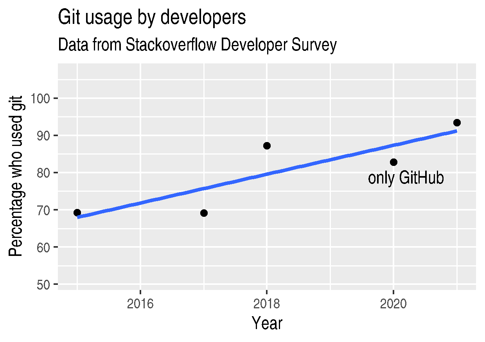
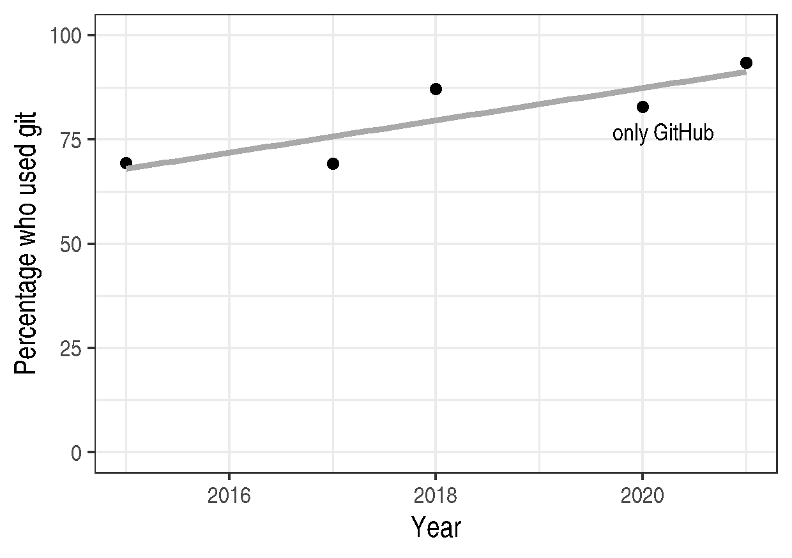
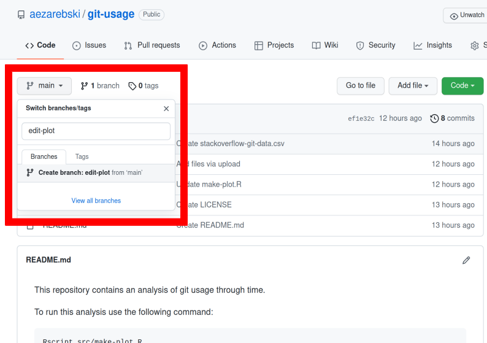
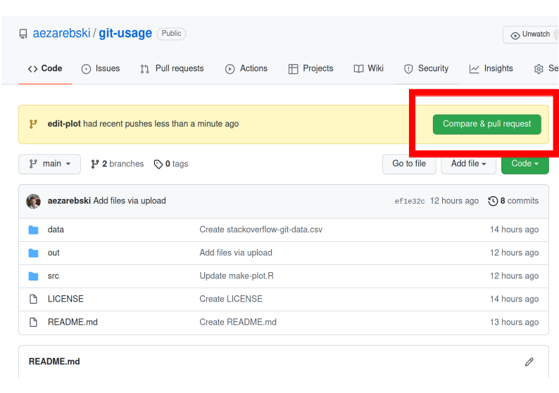
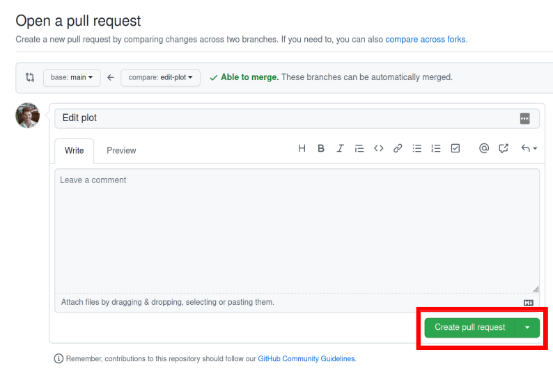
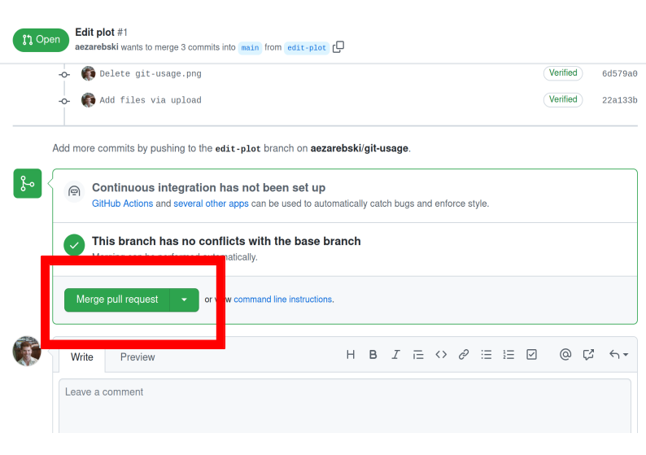
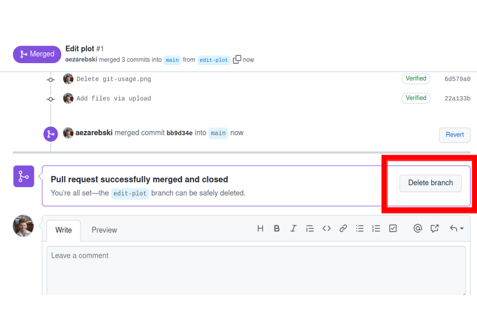

Git, GitHub and Reproducible Research
Table of Contents
Welcome to Git, GitHub and Reproducible Research! In this tutorial we will look at ways git and GitHub can help you with computational research, including how make it more reproducible. You will learn the fundamentals of git and gain practical experience in the use of GitHub. For those interested in learning more about version control, there is also a list of additional resources and some homework problems at the end to test your understanding.
Please read through the background material first then follow along with the worked example. You do not need any special software installed (everything is done in the browser), however the worked example does make use of R and ggplot2. Installing RStudio is probably the easiest way to utilise these software. If you find an error in this document, or would like to suggest an improvement, please make a note of this in the issue tracker on GitHub.
1. Disclaimer
These materials makes use of proprietary products and a simplified workflow in order to emphasise the main concepts and to save on installation and configuration time. Some references will be given at the end to direct you to free and open source solutions and more sustainable workflows; the core ideas are the same though, so understanding the material given here should make it easier to migrate to more advanced methods in the future should the need for them arise.
2. Background material
This section provides some context for why you might care about git, GitHub and reproducible research. This document only provides the absolute basics of these topics but should get you started with them and help direct further learning.
2.1. Version control
Version control refers to systems which help to manage the writing and
maintenance of things such as software, documents, and websites. These systems
were developed to manage large software projects but are useful at many levels.
For example, version control can help you avoid the following situation:
my-analysis.R, my-analysis-final.R, my-analysis-final-again.R, and so on.
Try coming back to that 3 months later when a reviewer asks you to re-run
something with a slight modification!
Reproducible research and Open research
In addition to helping you with organising your files, a version control system and it's associated tooling can also help the scientific community by helping to make your research reproducible and open.
For your computational research to be considered reproducible, it needs to be described in such a way that others can replicate your results. For it to be open, the materials (code, data and sufficient documentation) need to be available for others. Simply dumping all of your code into something like GitHub is not sufficient for your research to be considered reproducible.
2.2. Git
Created in 2005 by Linus Torvalds to help with the development of the Linux kernel, git has become a fundamental tool in software development. In the 2021 Stackoverflow Developer Survey over \(90\%\) of respondents used git; it is nearly synonymous with version control. If you intend to collaborate in the writing of substantial amounts of code, taking the time to learn how to use git is a good idea.
Working with git will be much easier if you get familiar with some of the terminology first. Unless you are familiar with git already, you should at least skim these before continuing.
Repository
A repository is a directory containing your files and the history of all the edits (see commit) made to these files. You can have a repository that only lives on your machine, but they are often shared on a platform such as GitHub.
Commit
An edit to a file that you have recorded as part of the history of edits is called a commit. It is both a noun and a verb, you commit an edit and the repository contains all of your commits. This can be thought of as a stronger version of saving a file. Each commit gets a unique identifier (called a hash). Sometimes we use "commit" to refer to the state of all the code after an edit.
Clone
When you make a copy of a repository you are cloning that repository. The resulting copy is referred to as a clone. Typically this will mean you have downloaded a copy from a platform such as GitHub.
Pull
Push
If you have committed some changes to your clone of a repository and want the original repository to have these changes made, you push these changes. This is a fancy way of saying use your edits to update the original files.
Branch
A branch is similar to a clone in that it is a copy of a repository. This provides a more sophisticated way for people to work on their own version of code, without messing up the main copy. This is not particularly important unless you are collaborating with others on a project.
Merge
If someone has made some useful changes on their branch the owner of the repository may decide to include their commits in the main copy. This process of including the changes on someone's branch is called merging the changes.
2.3. GitHub
What is GitHub?
GitHub, Inc. is a subsidiary of Microsoft. Their website provides freemium hosting of git repositories. In addition to hosting the repositories, it offers additional tools to assist with software development. We will make extensive use of GitHub in this tutorial to avoid you needing to install anything on your machine. If you are going to use git extensively, it would be wise to learn how to do this from the command line or some other program.
Setting up a GitHub account
To register an account you will need an email address that can be used for verification.
- Visit https://github.com/ and click Sign Up.
- Fill in the forms to create an account.
- Verify that account by entering the access code GitHub sends to the email address you registered with.
- Verify that you can summon the Command Palette with
crtl kfor Windows and Linux andcommand kon a mac. - The appearance and accessibility settings can be reached by searching for them in the command palette.
2.4. Zenodo
Zenodo is an open access archive operated by CERN which allows researchers to archive research materials with a DOI which makes them easier to cite. This is a more permanent form of storage than GitHub. It is easy to archive a particular commit of a repository which is good practice if you want to refer to a particular version of some code in a paper.
3. Worked example
Now that we have an understanding of version control and its associated tooling, we can see an example of how this enables us to do more reproducible research. Suppose you wanted to ensure that the analysis leading to Figure 1 was reproducible. In this worked example we will work through the process of setting up a repository and uploading the relevant files. A copy of the resulting repository is available here.

Figure 1: The percentage of developers who use git has increased since 2015. Data from the Stackoverflow Developer Survey is shown as black points and a least squares regression is shown as a blue line, the trend is not significant at \(95\%\).
We will start by looking at the code and data used in this analysis, then consider how one might organise the files. Once we have the code in a sensible state we can put it in a GitHub repository and add some finishing touches such as a license, some documentation, and some additional information about package versions. We then consider the situation in which changes need to be made by a collaborator.
3.1. Code and data
Start by making a new directory called git-usage which will hold all our
files. The data and the code that generated this figure are included below. This
data should be saved in a called stackoverflow-git-data.csv.
year,percentage 2015,69.3 2017,69.2 2018,87.2 2020,82.8 2021,93.43
We then need a script to carry out the analysis. Save the following code in a
file called make-plot.R
library(ggplot2) sods_data <- read.csv("stackoverflow-git-data.csv") g <- ggplot( data = sods_data, mapping = aes(x = year, y = percentage)) + geom_point() + geom_smooth(method = "lm") + geom_text( aes(x = 2020, y = 82.8, label = "only GitHub"), nudge_x = 0.2, nudge_y = -4) + labs( x = "Year", y = "Percentage who used git", title = "Git usage has increased", subtitle = "Data from Stackoverflow Developer Survey") ggsave(filename = "git-usage.png", plot = g, height = 7.4, width = 10.5, units = "cm") sink(file = "regression-summary.txt") summary(lm(percentage ~ year, data = sods_data)) sink()
Once we have run the make-plot.R script, the directory should contain four files
and have a structure like the following.
git-usage ├── git-usage.png ├── make-plot.R ├── regression-summary.txt └── stackoverflow-git-data.csv
In the next section we will go through cleaning this up so it is easier for people (including yourself in the future) to make sense of this.
3.2. Organising the data and code
As a first step we will use directories to impose a sensible structure to our
files. Organising files in this way is useful as it makes it far easier for
someone to understand what each file is needed for. Follow the following steps
(starting from within git-usage,) to organise your code more appropriately:
- Make a directory called
srcand movemake-plot.Rthere. - Make a directory called
dataand movestackoverflow-git-data.csvthere. - Make a directory called
outwhich we will write results to. - Fix the call to
read.csvinmake-plot.Rso it can find the CSV since it now lives in thedatadirectory. - Fix the calls to
ggsaveandsinkso they write their output to theoutdirectory.
Once you have done this, the R script should look like the following.
sods_data <- read.csv("data/stackoverflow-git-data.csv") ... ggsave(filename = "out/git-usage.png", plot = g, height = 7.4, width = 10.5, units = "cm") sink(file = "out/regression-summary.txt") summary(lm(percentage ~ year, data = sods_data)) sink()
Once you have run the code (with git-usage as your working directory), the
directory structure should look like the following. Note how the output files
now appear in the out directory. If you are running the script from an R REPL,
remember you can use setwd to specify the working directory.
git-usage
├── data
│ └── stackoverflow-git-data.csv
├── out
│ ├── git-usage.png
│ └── regression-summary.txt
└── src
└── make-plot.R
3.3. Uploading to GitHub
Now that our code is in a reasonable state, we can upload it to GitHub. If you do not already have a GitHub account, please follow the instructions above, which describe how to make one. Once you have a GitHub account, you can follow the following steps to upload these files:
- Visit https://github.com/ and create a new repository by clicking New, you
will need to pick a name for the repository (I called mine
git-usage.) The default settings provided by GitHub are fine. Click Create repository. - We now need to commit our files and push them to the remote repository.
However, since we are doing this through GitHub, it is all combined into a
single step. Click creating a new file to start the process of adding the
src/make-plot.Rfile.- Ensure the name of the file is
git-usage/src/make-plot.R. - Copy-and-paste the code in
make-plot.Rinto the text box provided. - Click Commit new file button.
- Ensure the name of the file is
- Repeat this process with
data/stackoverflow-git-data.csvand the output TXT file. In the case of the PNG image,git-usage.png, you will need to use Upload file instead of Create new file.
3.4. Adding a license
A license specifies what people can do with your code. If you aren't sure what license suits your needs, you might find https://choosealicense.com/ has some helpful information. Most of the time, I will opt for the MIT license.
There are two ways you might add a license. The manual method is to copy and
paste the license text into a file called LICENSE to your repository, filling in
[year] and [fullname] as appropriate. Alternatively, you can Add file and Create
new file and specify that the file will be called "LICENSE" and it will offer
you some templates to choose from. It will auto-fill the details of your name
and the year.
3.5. Adding a README
When you encounter a repository online it can be difficult to understand what
its purpose is and how to use it. "README" is the name given to a file that
contains this sort of information. Typically these will be written in markdown
(similar to RMarkdown). Add a file called README.md to your repository with text
similar to the following.
This repository contains an analysis of git usage through time. To run this analysis use the following command: ``` Rscript src/make-plot.R ``` The input data is in `data` and the results are in `out`.
3.6. Recording the session information
Software gets updated, and sometimes these updates cause things to break. Where
possible, it is very good practise to include details of the versions of
software you have used. When working with R the sessionInfo command makes this
simple. Try adding the following to the end of the make-plot.R script.
sink(file = "out/package-versions.txt") sessionInfo() sink()
The next time that you run this script, it will write a description of the
version of R you used and the versions of all the loaded packages to the file
out/package-versions.txt. Try running the script again to make sure this
additional file was generated and contains something similar to the following.
R version 4.1.2 (2021-11-01) Platform: x86_64-pc-linux-gnu (64-bit) Running under: Ubuntu 20.04.3 LTS Matrix products: default BLAS: /usr/local/lib/R/lib/libRblas.so LAPACK: /usr/local/lib/R/lib/libRlapack.so locale: [1] LC_CTYPE=en_GB.UTF-8 LC_NUMERIC=C [3] LC_TIME=en_GB.UTF-8 LC_COLLATE=en_GB.UTF-8 [5] LC_MONETARY=en_GB.UTF-8 LC_MESSAGES=en_GB.UTF-8 [7] LC_PAPER=en_GB.UTF-8 LC_NAME=C [9] LC_ADDRESS=C LC_TELEPHONE=C [11] LC_MEASUREMENT=en_GB.UTF-8 LC_IDENTIFICATION=C attached base packages: [1] stats graphics grDevices utils datasets methods base other attached packages: [1] ggplot2_3.3.5 loaded via a namespace (and not attached): [1] magrittr_2.0.1 splines_4.1.2 tidyselect_1.1.1 munsell_0.5.0 [5] colorspace_2.0-2 lattice_0.20-45 R6_2.5.1 rlang_0.4.12 [9] fansi_0.5.0 dplyr_1.0.7 tools_4.1.2 grid_4.1.2 [13] gtable_0.3.0 nlme_3.1-153 mgcv_1.8-38 utf8_1.2.2 [17] withr_2.4.3 ellipsis_0.3.2 digest_0.6.29 tibble_3.1.6 [21] lifecycle_1.0.1 crayon_1.4.2 Matrix_1.3-4 farver_2.1.0 [25] purrr_0.3.4 vctrs_0.3.8 glue_1.6.0 labeling_0.4.2 [29] compiler_4.1.2 pillar_1.6.4 generics_0.1.1 scales_1.1.1 [33] pkgconfig_2.0.3
Once you are happy that this has worked, we need to commit these changes. First
by editing the script, and second, add the package-versions.txt file.
3.7. Branching and merging
Suppose that after doing all of this one of your collaborators wants to adjust the figure. We will now go through the steps involved with doing this using branches.
Branching to make changes
Figure 2 is a modification of Figure 1 with the desired changes.

Figure 2: The percentage of developers who use git has increased since 2015. Data from the Stackoverflow Developer Survey is shown as black points and a least squares regression is shown as a grey line, the trend is not significant at \(95\%\).
To avoid making changes to the main copy of the code we will work on a branch, and then when we are happy with the changes we will merge them. To start with, create a new branch by clicking on the drop-down menu labelled "main" as shown in Figure 3. I called it "edit-plot", but you can use anything other than "main" (because that is the default branch name used by GitHub).

Figure 3: Create a new branch using the drop-down menu.
Make desired edits to the code and output
Making sure that you are on your branch — if you're not sure, click on the
branch button to double check — edit the make-plot.R script so that it has the
following
g <- ggplot( data = sods_data, mapping = aes(x = year, y = percentage)) + geom_point() + geom_smooth(method = "lm", colour = "darkgrey") + geom_text( aes(x = 2020, y = 82.8, label = "only GitHub"), size = 3, nudge_x = 0.2, nudge_y = -6) + labs( x = "Year", y = "Percentage who used git") + ylim(c(0,100)) + theme_bw()
Once you have made the changes and re-run that script the figure in
git-usage.png will have changed — it should look like Figure 2
now. Ordinarily, you would update the figure in the same way that you update
code, by committing the changes. However, this is tricky to do via the GitHub
website for image files, so instead, delete the file and upload the modified
one. At this point it might be interesting to move between the main branch and
your new branch to see how the files change between the two.
One motivation for branches is that you can make exploratory changes without
risking messing up your code on the main branch. If you have a collaborator that
wanted to try something, they could do so on a separate branch and then, if you
like their edits, you can merge them into main as we are about to do now.
Merge the changes
To merge your changes via the website, go back to the main page of the repository and you should see a new button, like the one shown in Figure 4, inviting you to compare the changes on this branch, i.e., to inspect if you consider this work worthy of inclusion.

Figure 4: A button appears to invite you to compare branches.
Inspect the differences between the branches and if you are happy with them create a pull request by clicking the button as shown in Figure 5.

Figure 5: If you are happy with the content of a branch, you can create a pull request.
Once you have created the pull request, the next step is to merge that branch
into the main branch. To do this you just need to click the button shown in
Figure 6.

Figure 6: If you accept a pull request you can merge the changes with the Merge pull request button.
Once a branch has been merged it will hang around until you delete it. Since having old branches around can lead to confusion, it is sensible to delete them afterwards. As shown in Figure 7 there is a button to achieve this.

Figure 7: Deleting a branch after it has been merged keeps the repository tidy.
At this point you should only have a single branch left and it should have the modifications to the figure. Congratulations on a reproducible analysis!
4. Next steps and alternative solutions
4.1. Upload to Zenodo
The Zenodo FAQs contain information about how to archive a GitHub repository if you want a more permanent form of storage. Ideally, one would archive the commit used to generate the contents of a manuscript so it has a DOI and reference both the archive and the live version of the code on GitHub in the manuscript.
4.2. Learn more about git
- Pro Git by Scott Chacon and Ben Straub is a free book that is the ultimate guide but is a bit technical at times.
- Atlassian/Bitbucket has excellent tutorials.
- Learn Git Branching is a game revolving around explaining git.
- GitHub Learning Lab has some introductory material on the use of git and GitHub.
- Stackoverflow questions will often have answers to your questions.
- Inside the Hidden Git Folder - Computerphile gives a bit of a behind the scenes tour of how git works.
4.3. Learn more about GitHub
There are lots of features in GitHub that haven't been covered but may be worth looking into: the issue tracker, the wiki, VSCode integration, and GitHub Pages and GitHub Actions.
4.4. Alternative solutions
Git
Git has the greatest market share but there are alternatives such as Subversion, Mercurial, CVS and Darcs. Given that the vast majority of people use git, your time is probably best spent learning git.
GitHub
While git dominates the market as the choice of version control system, there are many viable alternatives platforms to GitHub which may be more suitable for your needs:
5. Homework
Please make sure that in answering these questions you use a format that is easy
to read and that supports hyperlinks. The ability to include chunks of code (or
mono-spaced fonts in general) will be useful, particularly if you want to
display the output of the tree command. I would recommend using something like
RMarkdown.
5.1. Question 1
Explain (in 100–200 words) the purpose of git, GitHub, and Zenodo and the relationship between these things. Describe the value of one feature of GitHub not covered in this tutorial (in 100–150 words).
5.2. Question 2
Explain (in 100–200 words) the role of version control in reproducible research. Give an example (in 100–150 words) of a situation in which version control does not suffice to make a piece of work reproducible. Describe (in 50–100 words) another popular tool that helps to make computational research reproducible.
5.3. Question 3
Download the scripts and data from the links below, and run them and organise this material in a GitHub repository in a suitable way. Give a brief overview of the decisions you made along the way (100–200 words). Remember to include a link to your GitHub repository in your answer.
If you cannot download these files directly, they should also be available here.
5.4. Question 4
This repository is an attempt at visualising two datasets. Unfortunately, a bug has been introduced somewhere. The steps carried out while creating this repository are as follows:
- Plot the data in
iris.csvusingmake-fig-a.R. - Plot the data in
mtcars-renamed.csvusingmake-fig-b.R - Realise there is duplicated code and refactor it:
reshape-data-function.R. - Tweak the figures to make them clearer.
- Realise that something is wrong with
fig-a.png!
Making reference to the commit history of the repository, answer the following questions (in 150–250 words):
- What is the bug and how would you fix it?
- How did you find the bug? How would you do this if the bug was more subtle, and there were hundreds of files and thousands of commits?
- What could have been done to prevent this bug?
5.5. Question 5
Read the editorial Ten Simple Rules for Reproducible Computational Research and (in 200–300 words total) give a brief explanation of how git and GitHub would or would not be relevant to each rule.